Základní grafické operace – Numpy a Pillow
V těchto cvičeních budeme opět pracovat s obrázkem: 
Byl vyfocen digitálním fotoaparátem a uložen v barvovém prostoru sRGB ve formátu JPEG. (A samozřejmě také výrazně zmenšen.) Jelikož úkolem tohoto cvičení je naučit se používat Numpy a další dostupné nástroje, pro načítání a ukládání už budeme používat metody knihovny Pillow.
Jsou-li k práci potřeba nějaké rovnice, jsou uvedeny v nápovědě (a také odkázány na zdroj), proto se jí nevyhýbejte ^_~
Převeďte uvedený obrázek z pozitivu do negativu:
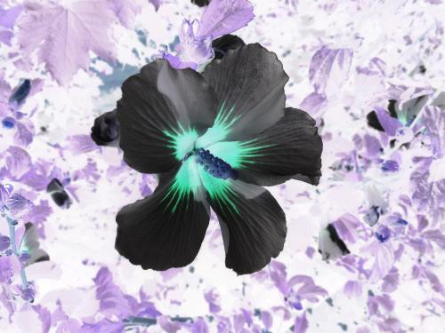
nápověda
Tohle je asi první cvičení na broadcasting – potřebujeme všechny barvové složky v každém pixelu odečíst od 255 a nemusíme kvůli tomu vyrábět matici 375×500×3.
S negativem úzce souvisí tzv. solarizace – převod do negativních barev pouze vybraných barevných odstínů. Toto je například výstup, v němž jsou převedeny pouze barvy o indexu větším než 77 (tedy vlastně ty světlejší):
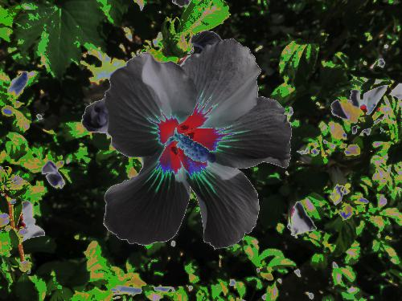
nápověda
Tohle je pravděpodobně první cvičení na výřezy z polí – ze všech pixelů potřebujeme zpracovat pouze ty, které mají určitou hodnotu.
Převeďte uvedený obrázek do odstínů šedi:
nápověda
Protože se správným – a překvapivě náročným – postupem jsme se už seznámili v předchozím cvičení, použijeme nyní jednodušší konverzní výraz podle ITU-R 601-2 luma transform pro převod z nelineárních hodnot R, G a B na tzv. lumu (nikoli tedy luminanci!):
$$Y^'_{601} = 0.299 * R^' + 0.587 * G^' + 0.114 * B^'$$
PS: Pro podrobnosti viz What is "luma"?.
Nyní v rámci procvičení výřezů numpyovských polí vyextrahujte z originálního obrázku jednotlivé barevné kanály:
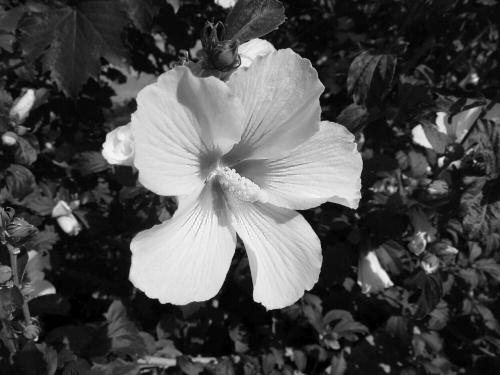
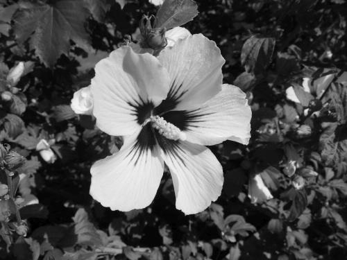
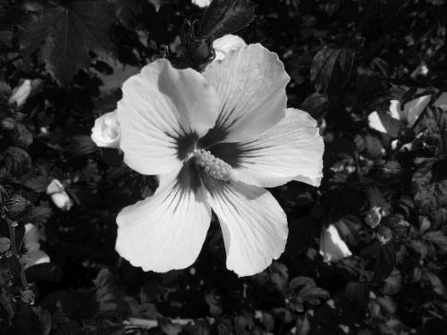
nápověda
Jedna barvová složka představuje světlost v příslušném jednom barevném kanálu, proto se zobrazují v odstínech šedi. Čistě teoreticky si můžete dát tu práci a pokusit se je zobrazit v „přirozené“ barvě, ale jelikož to na webu umíme jenom přes plné RGB-spektrum, není to vůbec jednoduché.
Jelikož už z předchozího příkladu umíte vzít světlosti příslušné jednotlivým barvám, zkuste nyní popřehazovat barvové kanály mezi sebou a uložit výsledek:
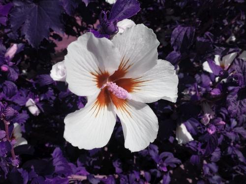
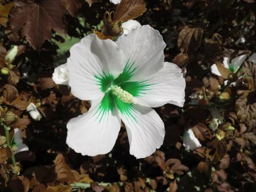
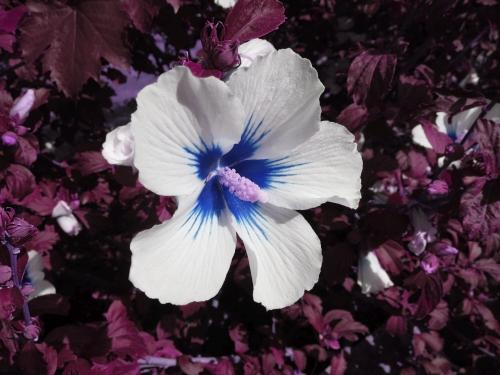
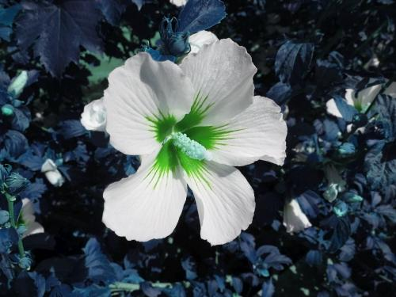
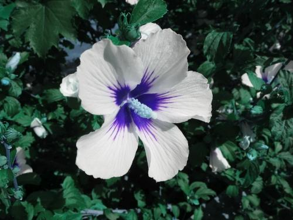
nápověda
Softwaru je samozřejmě šumák, co hodnoty v poli představují – RGB-matice rozměru
m×n×3 je vyhodnocena jako RGB pouze proto, že se k ní tak chováme.
Jako další procvičení na výřezy numpyovských polí zmenšete vstupní obrázek třebas na polovinu:
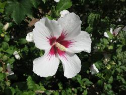
nápověda
Při zmenšování jde o ztrátu informace a překvapivě se dá rozumných (tedy koukatelných) výsledků dosáhnout pouhým výběrem podmnožiny všech pixelů, což je smyslem této úlohy. Správně by se „zahazované“ pixely měly nějakým způsobem průměrovat, ale to je bonus.
Jako další operaci na broadcasting zkuste originální obrázek ztmavit:
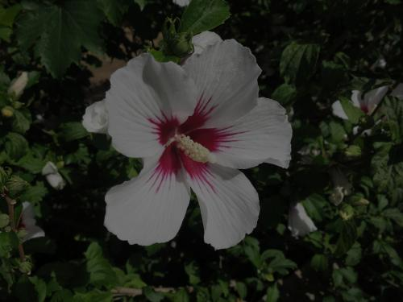
nápověda
Ztmavit obrázek znamená zmenšit světlost v jeho jednotlivých barvových kanálech. V nejjednodušším případě ve všech stejně, jedná se tedy o broadcasting skaláru. Reálně by se spíše počítal každý kanál jiným koeficientem a šlo by tak o broadcasting vektorem, ale to si také necháme na jindy. (Natožpak pak ztmavování pomocí vhodné nelineární funkce.)
Mimochodem – při ztmavování obrázku pochopitelně začneme přicházet o informace, především ve stínech. Za prvé menší rozdíly asi nerozeznáme tak dobře a za druhé zmenšováním čísel blízko nuly můžeme informaci prostě ztratit i díky konečné přesnosti výpočtu. V praxi se snadno a rychle stane, že se tmavé plochy začnou za chvíli všechny mapovat na jednolitou černou.
Mimochodem – při ztmavování obrázku pochopitelně začneme přicházet o informace, především ve stínech. Za prvé menší rozdíly asi nerozeznáme tak dobře a za druhé zmenšováním čísel blízko nuly můžeme informaci prostě ztratit i díky konečné přesnosti výpočtu. V praxi se snadno a rychle stane, že se tmavé plochy začnou za chvíli všechny mapovat na jednolitou černou.
Doplňkovou operací ke ztmavení je zesvětlání:
Pozor – tato úloha už není tak přímočará jako předchozí na ztmavení!
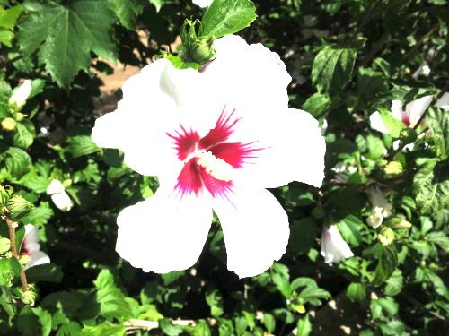
Pozor – tato úloha už není tak přímočará jako předchozí na ztmavení!
nápověda
Zcela naopak k předchozí úloze musíme nyní světlost v jednotlivých barvových kanálech zvětšit (a zase v zájmu zjednodušení použijeme pouze broadcasting skalárem místo vektorem nebo dokonce rovnou nějakou nelineární funkcí). Jenomže zatímco přibližovat se k nule jsme mohli bez nesnází, jen tak si zvětšovat čísla dost dobře nemůžeme – typický výstupní obrázek má na jeden barvový kanál vyhrazen pouze jeden bajt a do něj se vleze nejvyšší číslo 255.
Je jasné, že vypočítané hodnoty musíme držet v rozmezí 0-255 a že tak při zesvětlování začneme ztrácet informace nejdříve z těch světlejších míst – prostě se dřív všechny namapují na čistou bílou. (A když to přeženete, tak tam kromě čisté černé namapujete úplně všechno ;-)
Je jasné, že vypočítané hodnoty musíme držet v rozmezí 0-255 a že tak při zesvětlování začneme ztrácet informace nejdříve z těch světlejších míst – prostě se dřív všechny namapují na čistou bílou. (A když to přeženete, tak tam kromě čisté černé namapujete úplně všechno ;-)
Ať si vyzkoušíme také něco složitějšího než jen násobení skalárem – „vypněte“ ve výstupních obrázcích vždy jeden kanál a druhé dva zachovejte:
Zdejší výsledky jsou tmavší, protože jsem „vypínaný“ kanál namapoval na 0. Můžete ale zkusit všelicos a všelijak, tohle samozřejmě není jediné možné řešení.
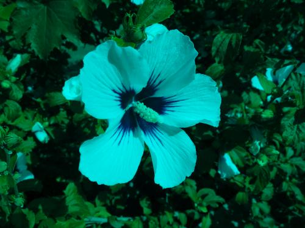
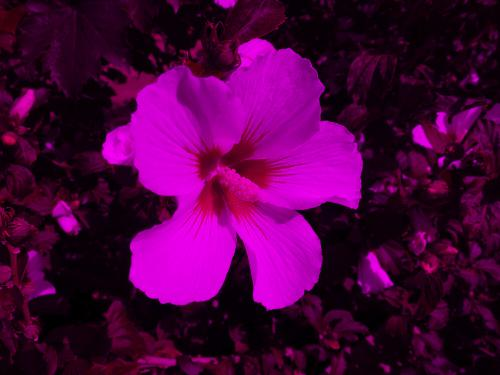
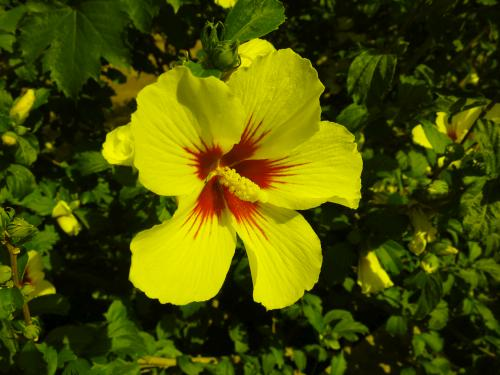
Na závěr si zahrajeme na analogového fotografa vybaveného digitální technikou ^_~ Dostali jste barevný negativ a máte za úkol ho zkopírovat (tedy zachovat velikost) pomocí zvětšovacího přístroje se zeleným filtrem. Jelikož ale nemáte možnost změřit osvit pozitivu, musíte provést klasickou proužkovou zkoušku – rozdělit pozitiv na několik (obdélníkových) oblastí a postupným posouváním krycí masky po nich vyzkoušet, jak se délka osvitu projeví (samozřejmě pouze v dané části obrazu). Programově tedy:
{kind=link}
- Výstupem je pozitiv, musíte proto barvy převést z negativu.
- Zelený filtr je ideální, ze tří barvových složek originálu tak použijete pouze zelený kanál.
- „Osvit“ testujte v pěti oblastech následujícím způsobem – prostřední část prostě zkopírujte, dvě krajní na jedné straně „podsviťte“ (tedy ztmavte) a druhé dvě krajní naopak „přesviťte“ (tedy zesvětlete). V zájmu procvičení práce s numpy-poli spočítejte výstup pro horizontální i vertikální směr.
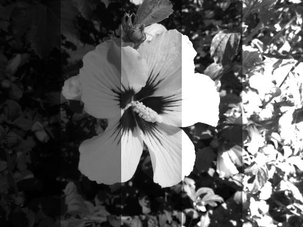
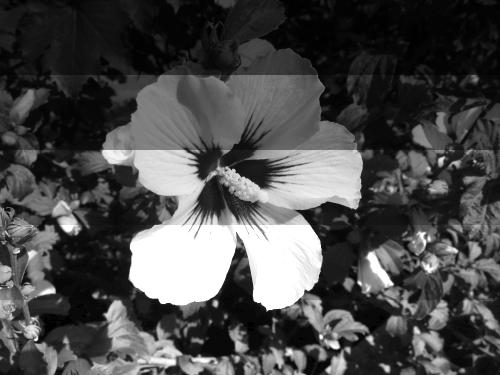
nápověda
Možná trochu zamotané, ale relativně přímočaré cvičení. Jen si dejte pozor, abyste nepřišli o originální obrázek – potřebujete ho pro dva výpočty.